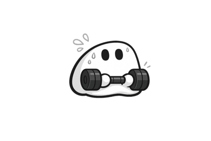
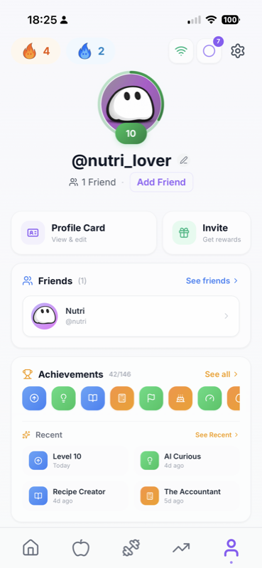

AI-powered nutrition & fitness
Track your food.
Level up your life.
Snap a photo and Nutri works out the calories, macros and micronutrients. Then keeps you coming back with streaks, XP and 146 achievements to chase.
iPhone · 3-day free trial · cancel anytime
Logging, five ways
However you want to log it,
it takes seconds.
Most apps give you a search box. Nutrio+ gives you five routes to the same place.
-
01
Photograph it
Point your camera at the plate. You get the name, weight, full macros, fibre, sugar, sodium and a health score.
-
02
Scan the barcode
Live camera scanning with torch support, plus a fallback built for UK supermarket own-brands.
-
03
Just type it
“Two eggs on brown toast and a flat white.” It splits the items and portions them out for you.
-
04
Say it out loud
Hands covered in cooking? Talk to it. Voice runs through the same understanding as typing.
-
05
Photograph a recipe book
Snap a page from a cookbook and it comes back as a structured recipe with nutrition worked out.
It understands the way people actually describe food — “a knob of butter”, “a glass of wine”, “half a bar of chocolate” — and learns how you portion things over time.
Your day, at a glance
Your whole day,
one glance.
Calories, protein, water and meals on one screen, with rings that fill as the day goes. No digging, no spreadsheets — open it and you know where you stand.
- Daily summary and goal rings
- Meal streak and workout streak side by side
- One-tap log meal, workout or weight
- Steps and calories burnt from Apple Health
Beyond calories
Every meal,
perfectly tracked.
Most trackers stop at calories and three macros. Nutrio+ also tracks the things that actually change how you feel — fibre, sugar and salt — against targets built from published guidance, not guesswork.
- Calories, protein, carbs and fat
- Fibre, sugar and salt with their own targets
- Targets from Mifflin–St Jeor, USDA and WHO guidance
- A–F meal grades so you learn as you log
Train with purpose
Train smarter,
not harder.
A full gym in your pocket: log every set, watch a live muscle map light up as you train, and let the AI build you a plan around your equipment and schedule.
- 813 exercises across 11 categories
- Anatomical muscle map — 14 groups, front and back
- Personal records detected automatically
- Rest timer that survives locking your phone
- Workouts written back to Apple Health

Level up
Turn fitness
into a game.
This is the bit other apps don't do. Every meal and every workout earns XP. You climb levels, protect streaks, unlock achievements and compete with friends — because consistency is the whole game, and boring apps get deleted.
- 146 achievements — every one free
- 100 levels, from Nutrition Newbie to Nutrio God
- 10 leagues with weekly promotion
- Profile cards you actually own and customise

The reward layer
Consistency, made
worth chasing.
Streaks to protect, coins to spend, a wheel to spin. Everything below is included — there's no second currency you buy with real money.
Streaks you can defend
Miss a day and you don't have to lose everything. Spend a Streak Shield to patch a gap in your meal streak, or a Rest Token to keep a workout streak alive. You earn both by playing — no purchase involved.
Friends, not strangers
A weekly league against people you actually know, ranked on XP only — never on weight or calories. Send reactions when someone's on a run. There's no global leaderboard, on purpose.
Built for the UK
All 14 FSA allergens, flagged.
Every meal you scan is checked against the full UK Food Standards Agency list — gluten, crustaceans, eggs, fish, peanuts, soy, milk, tree nuts, celery, mustard, sesame, sulphites, lupin and molluscs. You're told what a meal contains and what it's free from.
Being straight with you: this is an aid, not a medical device. AI can get things wrong and can miss an allergen entirely. If you have a serious allergy, always check the packaging or ask the kitchen. Nutrio+ says exactly this inside the app, too.
I got into fitness and tried every app going. They all felt like a chore — boring, forgettable, nothing that made me actually want to open them.
So I built my own. Achievements to unlock, XP to grind, streaks worth protecting, and Nutri cheering you on the whole way.
The app I wished existed. Built different, on purpose.
Pricing
Try it free
for three days.
One subscription, everything unlocked. No ads, no upsells, no separate currency to buy.
Monthly
£10.99/month
Billed monthly
6-Month
£54.99/6 months
£9.17 a month · save 17%
Yearly
£89.99/year
£7.50 a month · save 32%
Prices shown in GBP and may vary by region — the App Store always shows what you'll actually pay. Subscriptions renew automatically unless cancelled at least 24 hours before the period ends. Manage or cancel any time in your Apple ID settings.
Questions
Before you
download.
Is there a free version?
There's a 3-day free trial on every plan, and you can cancel before it ends without being charged. After that Nutrio+ is a paid subscription — it's one app, fully unlocked, rather than a free tier that nags you.
How do I cancel?
Through your Apple ID subscription settings, the same as any App Store subscription. Cancel at least 24 hours before your trial or period ends. We never see your card details — Apple handles all billing.
Is it on Android?
Not yet. Nutrio+ is iPhone-only for now, and it's built natively for iOS — Apple Health, home-screen widgets and lock-screen widgets all work properly.
How accurate is the AI?
It's very good at recognisable meals and packaged food, and less certain with mixed dishes where ingredients are hidden. You can edit anything it returns, and it learns how you portion things over time. Treat it as a fast first draft you can correct, not an absolute truth.
Can I trust it with allergies?
Use it as a helpful extra check, never as your only one. It screens against all 14 UK FSA allergens and tells you what a meal is free from as well as what it contains — but AI can miss things. Always check packaging or ask the kitchen if an allergy is serious.
Does it work with Apple Health?
Yes. It reads your steps and the calories you've burned, and writes your workouts back to Apple Health so the rest of your health data stays in one place.
Is there a widget?
Three home-screen sizes plus a lock-screen widget, showing calories against goal, macros, water and both your streaks. Tapping one drops you straight into the app.
What happens if I lose signal?
Keep logging. Meals queue up on your phone and sync the moment you're back online.
Start your streak today.
Three days free. Everything unlocked. See if a tracker you don't hate makes the difference.
Download on theApp Store